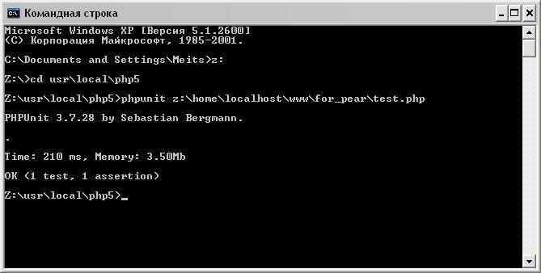
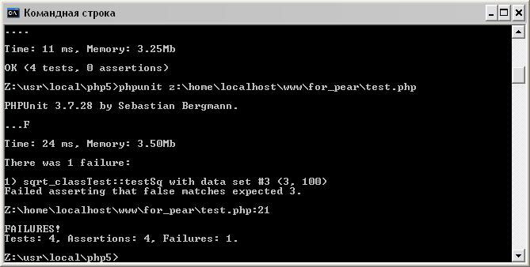

Создаем первый тест
Итак, давайте рассмотрим следующий класс (файл sqrt_class.php):
01.<?php
02.class sqrt_class {
03.
04.public function sq($x)
05.{
06.if($x == 5) {
07.return TRUE;
08.}
09.if($x == 100) {
10.return FALSE;
11.}
12.return sqrt($x);
13.}
14.}
15.?>
Как Вы видите, это очень простой класс, который содержит всего один метод, возвращающий корень квадратный переданного ему параметра $x. Также данный метод проверяет значение данного параметра и если оно равно 5, значит, возвращаем TRUE. Если же значение параметра $x равно 100, значит, вернем FALSE.
Теперь, необходимо создать специальный класс, который и будет выполнять тест. Для этого создадим новый файл, под названием test.php. Первым делом необходимо подключить главный файл инструмента PHPUnit, без которого работа тестов не возможна.
1.require_once 'PHPUnit/Autoload.php';
Затем подключаем класс, который нужно протестировать:
1.require_once 'sqrt_class.php';
Перед созданием класса для тестирования рассмотрим несколько правил создания таких классов:
Название класса теста складывается из названия тестируемого класса плюс “Test”.
Класс для тестирования практически всегда должен быть наследником класса PHPUnit_Framework_TestCase.
Каждый метод теста является публичным методом, название которого начинается с префикса “test”.
Внутри метода теста мы используются специальные методы тестирования – assert-методы. Которые и задают способ тестирования.
Теперь создадим класс для тестирования (для лучшего понимания приведу полный код файла test.php):
01.<?php
02.require_once 'PHPUnit/Autoload.php';
03.require_once 'sqrt_class.php';
04.
05.class sqrt_classTest extends PHPUnit_Framework_TestCase {
06.public function testSq() {
07.$my = new sqrt_class();
08.//метод assertEquals(), который первым обязательным параметром принимает ожидаемое значение, вторым актуальное и проверяет их соответствие.
09.$this->assertEquals(4, $my->sq(16));
10.}
11.}
12.?>
Как Вы видите, класс для тестирования достаточно простой и содержит всего один метод testSq. Имя данного метода выбрано в соответствии с выше изложенными правилами. То есть мы хотим протестировать метод sq(), значит, имя будет таким же, но с добавлением префикса test. В данном методе, мы создаем объект класса sqrt_class() (класс, метод которого мы хотим протестировать), и сохраняем его в переменной $my. Теперь в зависимости от того, какой тест нужно выполнить, необходимо вызвать специальный assert-метод.
Для первого теста, мы применим метод assertEquals(), который первым параметром принимает ожидаемое значение (то есть то верное значение которое должен возвращать метод), вторым — реальное значение (то есть значение которое действительно возвращается методом). И сравнивает эти два значения. Если они равны – тест пройден успешно. Если же нет — то ошибка.
Теперь как Вы видите, при вызове метода assertEquals(), первым параметром мы передаем значение 4, как ожидаемое. И вторым, передаем вызов метода sq() класса sqrt_class – как реально вычисленное значение. Параметром к методу sq(), передадим значение 16. Значит в результате отработки метода мы должны получить число 4, при этом ожидаемое значение, мы так же передали 4. Значит, тест должен завершиться успешно. Поэтому, давайте выполним тест и проверим.
Для запуска теста, необходимо вернуться в командную строку, перейти в папку с интерпретатором языка php и набрать команду:
1.phpunit path,
где path – это путь к файлу с тестом, в нашем случае это файл test.php. То есть в командной строке выполняем команду:
1.phpunit z:\home\localhost\www\for_pear\test.php
В результате мы увидим следующее:

Итак, что мы видим. Первое, что бросается в глаза – это приветствие, то есть версия PHPUnit и имя создателя. Далее – точка. Точка – это признак того, что тест выполнен успешно. Затем указана, различная сервисная информация (количество затраченного времени, памяти и т.д). Теперь давайте, изменим ожидаемое значение, с 4 на 2 (то есть первым параметром методу assertEquals() передадим 2) и запустим тест:
Теперь вместо точки мы видим букву F, что означает Fault – ошибка. Ниже можно прочитать в чем именно заключается ошибка теста. То есть тест закончился с ошибкой.
В данном примере, мы рассмотрели передачу двух параметров в метод assertEquals(), но что делать, если нужно протестировать отработку метода, для различных параметров. Не будем же мы для каждого набора параметров, вручную запускать тест? Конечно нет. Для решения данной задачи, необходимо использовать провайдеры данных. Провайдеры данных, содержат в себе массив параметров, которые будут подставлены во время запуска теста. Тем самым, запуская тест мы выполним столько тестов, сколько наборов параметров содержится в провайдере данных.
Провайдер данных это обычный метод, который возвращает массив с набором параметров следующем формате:
01.public function providerSq ()
02.{
03.return array (
04.array (param1, param2),//параметры для тест 1
05.array (param1, param2),// параметры для тест 2
06.array (param1, param2),// параметры для тест 3
07.array (param1, param2)// параметры для тест 4
08.);
09.}
Массив должен быть многомерным. Каждая ячейка должна содержать еще массив с параметрами для конкретного теста (если нужно передать два параметра, то соответственно массив содержит две ячейки). Количество ячеек, равно количеству тестов. Для использования провайдеров необходимо соблюдать два правила:
Метод являющийся провайдером, должен быть назван, как и тестируемый метод, с добавлением приставки provider.
Перед тестируемым метод, необходимо указать в специальном комментарии название его провайдера. Следующим образом:
1./**
2.* @dataProvider имя провайдера
3.*/
Поэтому давайте изменим код класса sqrt_classTest, для использования провайдеров:
01.class sqrt_classTest extends PHPUnit_Framework_TestCase {
02./**
03.* @dataProvider providerSq
04.*/
05.public function testSq($a,$b) {
06.$my = new sqrt_class();
07.$this->assertEquals($a, $my->sq($b));
08.}
09.
10.public function providerSq ()
11.{
12.return array (
13.array (2, 4),
14.array (4, 16),
15.array (5, 5),
16.array (3, 100)
17.);
18.}
19.}
Теперь, давайте выполним данный тест:

Как Вы видите, сейчас выполнилось четыре теста – для каждого набора параметров. Четвертый тест выполнился с ошибкой. Так как корень квадратный из 100, ни как не может быть равен 3. Наряду с методом assertEquals, есть еще два полезных метода assertTrue() и assertFalse(), которые проверяют, является переданное выражение истинным или ложным соответственно. То есть, метод для тестирования истинности возвращаемого значения:
1./**
2.* @dataProvider providerSq
3.*/
4.
5.public function testSq($a,$b) {
6.$my = new sqrt_class();
7.$this->assertTrue($my->sq($b));
8.}
Данный тест успешно выполнится если метод sq(), вернет TRUE. И метод для тестирования того, что тестируемый метод вернет FALSE:
1./**
2.* @dataProvider providerSq
3.*/
4.public function testSq($a,$b) {
5.$my = new sqrt_class();
6.$this->assertFalse($my->sq($b));
7.
8.}
Данный тест успешно выполнится если метод sq(), вернет FALSE.
3. Тестирование массивов
Теперь давайте рассмотрим следующий класс (файл arr_class.php):
01.<?php
02.class arr_class {
03.
04.public function getArr($k)
05.{
06.return explode('|',$k);
07.}
08.
09.
10.}
Опять же данный класс содержит всего один метод, который параметром принимает строку и разбивает ее в массив, по разделителю “|”. Для тестирования массивов в PHPUnit есть специальные методы. Поэтому давайте рассмотрим код файла test2.php, позволяющий выполнять тестирование массивов:
01.<?php
02.require_once 'PHPUnit/Autoload.php';
03.require_once 'arr_class.php';
04.
05.class arr_classTest extends PHPUnit_Framework_TestCase {
06.
07./**
08.* @dataProvider providerGetArr
09.*/
10.public function testGetArr($key,$str) {
11.$my = new arr_class();
12.//$this->assertArrayHasKey($key,$my->getArr($str));
13.//$this->assertContains($key,$my->getArr($str));
14.//$this->assertContainsOnly('integer',$my->getArr($str));
15.//$this->assertCount($key, $my->getArr($str));
16.}
17.
18.public function providerGetArr ()
19.{
20.return array (
21.array (3, 'ku|hello|white'),
22.array (4, 'ku1|hello1|white1'),
23.array (3, '2|2|2'),
24.);
25.}
26.}
Методы в классе я специально закомментировал, что бы можно было их использовать поочередно:
assertArrayHasKey($k, $arr) – проверяет, существует ли ключ $k, в массиве $arr.
assertContains($v, $arr) – проверяет существует ли элемент $v в массиве $arr.
assertContainsOnly(‘type’, $arr) — проверяет, содержат ли ячейки массива $arr, значения типа данных type.
assertCount($count,$arr) – проверяет, соответствует ли число $count, количеству элементов массива $arr.
Запуск теста производим аналогично предыдущим примерам, только не забывайте правильно указывать путь для файла с тестом.
4. Тестирование исключений
И последнее, что мы рассмотрим – это тестирование исключений. Давайте рассмотрим класс:
01.<?php
02.class MyException extends Exception {};
03.
04.class ex_class {
05.public function getEx($k)
06.{
07.if($k == 10) {
08.throw new MyException('Wrong var');
09.}
10.else return true;
11.}
12.}
13.?>
Класс содержит всего один метод, который генерирует исключение, если переданный ему параметр равен 10. Теперь посмотрите на класс, с помощью которого можно проверить генерацию исключений:
01.<?php
02.require "PHPUnit/Autoload.php";
03.require "ex_class.php";
04.
05.class ex_classTest extends PHPUnit_Framework_TestCase {
06.
07.protected $ob;
08.
09.protected function setUp() {
10.$this->ob = new ex_class();
11.}
12.
13./**
14.* @dataProvider providerGetEx
15.*
16.*/
17.public function testGetEx($key) {
18.$this->setExpectedException("myException");
19.$this->ob->getEx($key);
20.}
21.
22.public function providerGetEx() {
23.return array(
24.array(3),
25.array(1),
26.array(10),
27.array(3)
28.);
29.}
30.
31.protected function tearDown() {
32.$this->ob = NULL;
33.}
34.}
35.?>
Первое, что Вы наверное заметили, это то, что добавилось два метода:
setUp() – который выполняется перед тестом. То есть, используя данный метод можно выполнить различные подготовительные действия. К примеру, в нашем случае – создаем объект тестируемого класса и сохраняем в свойство $fixture.
tearDown() — который, выполняется после теста. То есть можно удалить лишние данные. В нашем случае удаляем созданный объект тестируемого класса.
Тестировать исключение можно при помощи метода setExpectedException(«myException») или необходимо указать перед тестируемым методом комментарий @expectedException MyException. Тест будет пройден успешно, если метод вернет исключение класса myException.
Вот и все, что я хотел сказать Вам по инструменту PHPUnit. Конечно, мы рассмотрели только основы, так как PHPUnit – это очень мощный и довольно сложный инструмент для тестирования кода. Но если он Вас заинтересовал, то продолжайте его дальнейшее изучение самостоятельно и применяйте изученное на практике.
Документация по PHPUnit содержится на данной странице: http://phpunit.de/manual/current/en/index.html
На этом давайте прощаться. Всего Вам доброго и удачного кодирования!!!